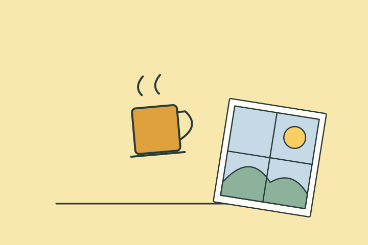

나의 결과는?
겨울 정리형
조용한 시간 속에서 마음을 정리하는 타입이런 타입이에요
당신은 계절 변화가 주는 정적 속에서 오히려 편안함을 느낍니다. 바쁘게 움직이기보다 나를 정리하고 차분히 비우는 시간에 감성이 살아납니다.
이런 순간, 나답죠
계절이 조용해지면 물건과 일정을 차분히 정리하고 싶어져요. 새로운 일을 늘리기보다 이미 가진 것의 자리를 찾아주는 시간이 편해요.
- 정리 감각
- 고요한 회복
- 자기 점검 능력
놓치기 쉬운 부분
편한 고요함이 사람과의 연결까지 모두 닫는 기준이 될 수 있어요. 혼자 있을 시간과 유지하고 싶은 연락 하나를 함께 남겨보세요.
오늘 해볼 한 가지
정리할 서랍 하나를 고르고 끝난 뒤 반가운 사람에게 짧게 안부를 보내보세요.
계절 키워드
고요정리정적정리 감각고요한 회복
다른 타입과 나란히 보면
재미로 보는 성향 콘텐츠예요. 전문적인 심리 검사나 진단이 아니며, 타입 간 관계도 비교를 위한 이야기예요.
답변별 유형 점수를 더해 가장 높은 타입을 보여줘요. 동점이면 봄빛 시작형 → 여름 활력형 → 가을 사색형 → 겨울 정리형 순서에서 앞선 타입이 표시돼요.
읽어봤다면, 친구와 비교해볼까요?
다음 테스트도 이어서 보기
 주말 충전 방식 찾기
주말 충전 방식 찾기